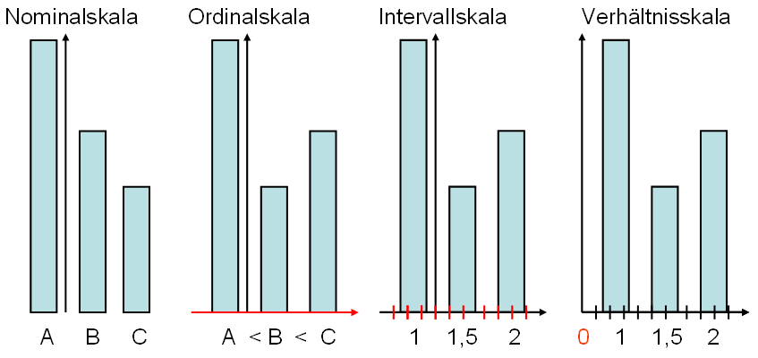
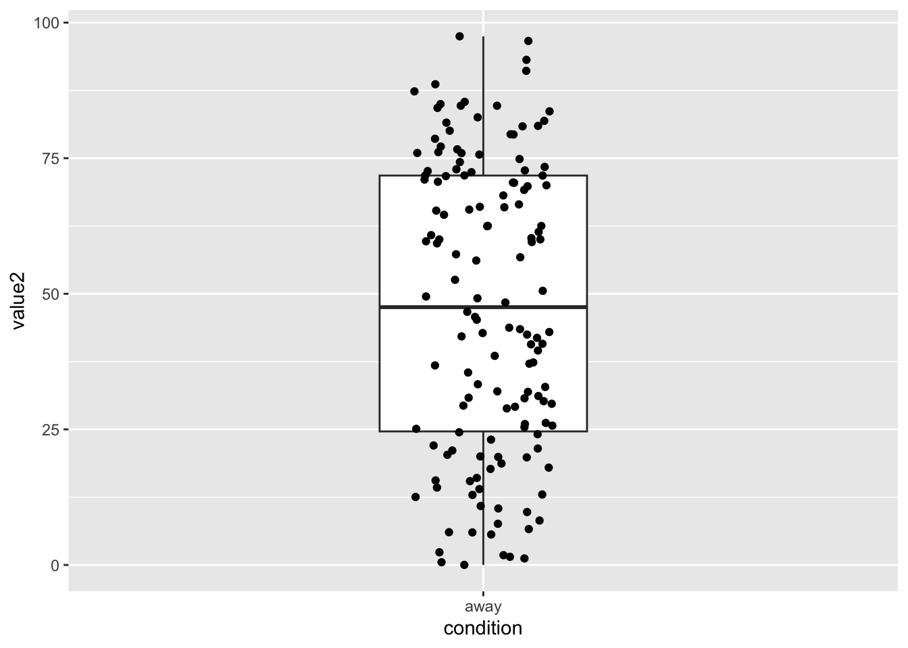
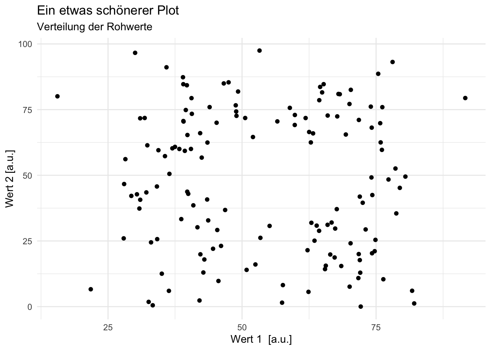

Grafiken erstellen mit ggplot
ggplot2-Package.
Gerda Wyssen ![]()
Daniel Fitze
Laden Sie hier den Beispielsdatensatz herunter, speichern Sie diesen in einem
data-Folder in einem R-Project.Öffnen Sie ein neues RScript (
.R) oder RMarkdown-File (.Rmd). In einem RMarkdown-File können Code und Text verbunden werden und die die Outputs des Codes (z.B. Grafiken) werden anzeigt.
Grafiken erstellen mit ggplot
Das gg im Package ggplot2 steht für Grammar of Graphics. Diese besagt, dass alle Grafiken aus den unten beschriebenen Komponenten zusammengesetzt werden können und sich damit vollständig beschreiben lassen. Das Kennen dieser Komponenten macht den anfangs oft etwas unintuitiven Aufbau von ggplot verständlicher.
Eine Grafik enthält mindestens folgende 3 Komponenten:
Daten
Geome, also sichtbare Formen (aesthetics), z.B. Punkte, Linien oder Boxen.
Koordinatensystem/Mapping: wie sind Daten und Geome verbunden?
Weitere optionale Komponenten sind:
Statistische Parameter
Position
Koordinatenfunktionen
Facets
Scales
Themes
In dieser Einführung wird auf die ersten drei Komponenten, sowie auf Facets und Themes eingegangen.
Beim Laden des Packages tidyverse wird automatisch das _Package ggplot2 ebenfalls geladen.
Daten
Die wichtigste Komponente einer Grafik sind die Daten. Bevor eine Grafik erstellt wird, müssen die Eigenschaften des Datensatzes bekannt sein.
# Einlesen des Übungsdatensatzes
d <- read.csv("data/DatasaurusDozen.csv") %>%
mutate(condition = as.factor(condition)) # Variable condition soll ein Faktor sein
# Datensatz anschauen
glimpse(d)Rows: 1,846
Columns: 3
$ condition <fct> away, away, away, away, away, away, away, away, away, away, …
$ value1 <dbl> 32.33111, 53.42146, 63.92020, 70.28951, 34.11883, 67.67072, …
$ value2 <dbl> 61.411101, 26.186880, 30.832194, 82.533649, 45.734551, 37.11…Datenformat
Am einfachsten ist das plotten mit ggplot(), wenn die Daten im long-Format vorliegen. Das bedeutet:
Jede Variable die gemessen/erhoben wird hat eine Spalte (z.B. Versuchspersonennummer, Reaktionszeit, Taste).
Jede Messung hat eine Zeile. In unserem PsychoPy-Experiment entspricht dies einer Zeile pro Trial.
Die hier eingelesenen Daten sind schon im long-Format.
Variablen
Für die Grafik ist es relevant, welches Skalenniveau die zu visualisierenden Variablen haben. Je nach Anzahl Variablen und den entsprechenden Skalenniveaus eignen sich andere Grafik-Formen.

Schauen Sie sich den Datensatz an.
- Wie viele unterschiedliche Variablen gibt es?
- Wie heissen die Variablen?
- Welches Skalenniveau haben sie?
Subsetting
Wenn nur ein gewisser Teil der Daten visualisiert werden soll, muss der Datensatz gefiltert werden. Der aktuelle Datensatz enthält beispielsweise verschiedene Bedingungen, jeweils mit Werten für Variable value1 und value2. Folgende 13 Bedingungen sind enthalten:
unique(d$condition) [1] away bullseye circle dino dots h_lines
[7] high_lines slant_down slant_up star v_lines wide_lines
[13] x_shape
13 Levels: away bullseye circle dino dots h_lines high_lines ... x_shapeFürs erste entscheiden wir uns für die Bedingung away.
Wir können für diese Bedingung zusätzlich summary statistics berechnen, hier Mittelwert und Standardabweichung.
d_away_summary <- d_away %>%
summarise(mean_v1 = mean(value1),
sd_v1 = sd(value1),
mean_v2 = mean(value2),
sd_v2 = sd(value2))
glimpse(d_away_summary)Rows: 1
Columns: 4
$ mean_v1 <dbl> 54.2661
$ sd_v1 <dbl> 16.76982
$ mean_v2 <dbl> 47.83472
$ sd_v2 <dbl> 26.93974Diese Werte geben einen Anhaltspunkt, in welchem Bereich sich die Werte bewegen werden.
Plot
In den folgenden Beispielen werden die Daten der Bedingung away verwendet. Als erstes Argument wird der Funktion ggplot() der Datensatz übergeben (data = data_away).
ggplot(data = d_away)
Mapping
Das mapping beschreibt, welche Variable auf der x- und y-Achse abgetragen werden sollen. Es wird also definiert, wie die Variablen auf die Formen (aesthetics) gemappt werden sollen. Am einfachsten wir dies zu Beginn in festgelegt (das mapping kann aber auch in der Funktion geom_ selbst definiert werden). Weitere Variablen könnten als group = ... oder color = ... eingefügt werden.

Die Grafik verfügt nun über Achsen, diese werden automatisch mit den Variablennamen beschriftet. Da noch keine Formen (geoms) hinzugefügt wurde ist die Grafik aber leer.
Geom / Formen
Als dritte Komponente werden in ggplot() wird die Form mit geom_ hinzugefügt. Jede Form, die eingefügt wird benötigt Angaben zum mapping, falls kein mapping angegeben wird, wird dieses aus der ggplot()-Funktion in der ersten Zeile übernommen.
Es gibt viele verschiedene Formen zur Auswahl. Beispielsweise werden mit geom_point() Punkte erstellt, mit geom_line() Linien, mit geom_boxplot Boxplots, usw. Bei der Wahl der passenden Form kommt es einerseits auf die Daten an. Sind die Daten z.B. Faktoren oder numerische Werte (siehe auch Skalenniveau oben)? Wie viele Variablen werden gleichzeitig in die Grafik eingebunden? Andererseits ist es wichtig, was mit der Grafik gezeigt werden soll: Unterschiede? Gemeinsamkeiten? Veränderungen über Zeit?
Geome zur Visualisierung von Datenpunkten und Verläufen:
- Punkte / Scatterplots -
geom_point() - Linien -
geom_line()
Geome zur Visualisierung von zusammenfassenden Werten:
- Histogramme -
geom_histogram() - Mittelwerte und Standardabweichungen -
geom_pointrange() - Dichteplots -
geom_density() - Boxplots -
geom_boxplot() - Violinplots -
geom_violin()
Kombinieren von mehreren geoms in einer Grafik
Teilweise werden in Visualisierungen mehrere geoms kombiniert. In vielen Fällen macht es beispielsweise Sinn, nicht nur die tatsächlichen Werte, sondern in derselben Grafik auch zusammenfassende Masse zu visualisieren.
Verwenden verschiedener geoms in einem Plot:
ggplot(data = d_away,
mapping = aes(x = condition,
y = value2)) +
geom_boxplot(width = 0.3) +
geom_jitter(width = 0.1) 
Kombiniert werden können aber nicht nur verschiedene Formen, sondern auch mehrere Datensätze. Dies kann in ggplot() einfach umgesetzt werden indem mehrere Geoms übereinandergelegt werden und nicht das mapping aus der ggplot()-Funktion genutzt wird, sondern indem für jedes geom ein separater Datensatz und ein separates mapping spezifiziert werden.
ggplot(data = d_away,
mapping = aes(x = condition,
y = value2)) +
geom_jitter(width = 0.1) + # verwendet Datensatz "d_away"
geom_point(data = d_away_summary, # verwendet Datensatz "d_away_summary"
aes(x = "away", y = mean_v1), # condition ist nicht im Datensatz enthalten, deshalb hier hardcoded
color = "red", # Punkt rot einfärben
size = 3) # Punkt vergrössern
Beschriftungen und Themes
Schönere und informativere Plots lassen sich gestalten, wenn wir einen Titel hinzufügen, die Achsenbeschriftung anpassen und das theme verändern:
ggplot(data = d_away,
mapping = aes(x = value1,
y = value2)) +
geom_point() +
labs(title = "Ein etwas schönerer Plot",
subtitle = "Verteilung der Rohwerte",
x = "Wert 1 [a.u.]",
y = "Wert 2 [a.u.]") +
theme_minimal()
Daten plotten: Hands on
Im Folgenden können Sie den Datensatz mit Grafiken erkunden. Sie können entweder in Ihrem RSkript/RMarkdown-File weiterarbeiten oder Sie können ein GUI (graphical user interface) verwenden, dass für Sie den Code schreibt.
Um das GUI zu verwenden, gehen Sie wie folgt vor:
Installieren Sie das package
esquissemitinstall.packages("esquisse")in Ihrer Konsole oder überTools>Install packages...Geben Sie in Ihrer Konsole
esquisse::esquisser()ein und wählen Sie dann unterImport Dataden schon eingelesenen DatensatzDatasaurusDozen.csvaus.
Welche
geom_s/Formen eignen sich gut für diesen Datensatz?Welche Abbildungen können alle 3 Variablen des Datensatzes berücksichtigen?
Wie kann man Bedingungen miteinander vergleichen?
Wie können Grösse und Farbe der
geom_s bestimmt werden?Wie passt man Schriftgrössen an?
Können Sie eine Grafik speichern?
Lassen Sie sich den Code direkt ins RScript/RMarkdown-File einfügen und verändern Sie den Code dort weiter.
Weiterführende Ressourcen zur Datenvisualisierung mit ggplot()
Dokumentation von
ggplot2Kurzweilige, kompakte und sehr informative Informationen und Videos über das Erstellen von Grafiken in
ggplotfinden Sie hier: Website PsyTeachR: Data Skills for reproducible researchHier ist der Start der PsyTeachR Videoliste von Lisa deBruine, dort finden sich auch hilfreiche Kurzvideos zu Themen von Daten einlesen bis zu statistischen Analysen. Beispielsweise zu Basic Plots, Common Plots und Plot Themes and Customization
Einführung in R von Andrew Ellis und Boris Mayer
Reuse
Citation
@online{wyssen,
author = {Wyssen, Gerda and Fitze, Daniel},
title = {Grafiken Erstellen Mit `Ggplot`},
url = {https://kogpsy.github.io/neuroscicomplabFS24//pages/chapters/data_visualization_1.html},
langid = {en}
}